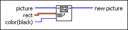

Draw Grayed Out Rect VI
Owning Palette: Picture Functions VIs
Requires: Base Development System
Draws a patterned rectangle in the specified picture to create the effect of graying-out a section of the picture.
An underlying picture shows through the holes in the pattern. The VI does not frame the rectangle.

 Add to the block diagram Add to the block diagram |
 Find on the palette Find on the palette |